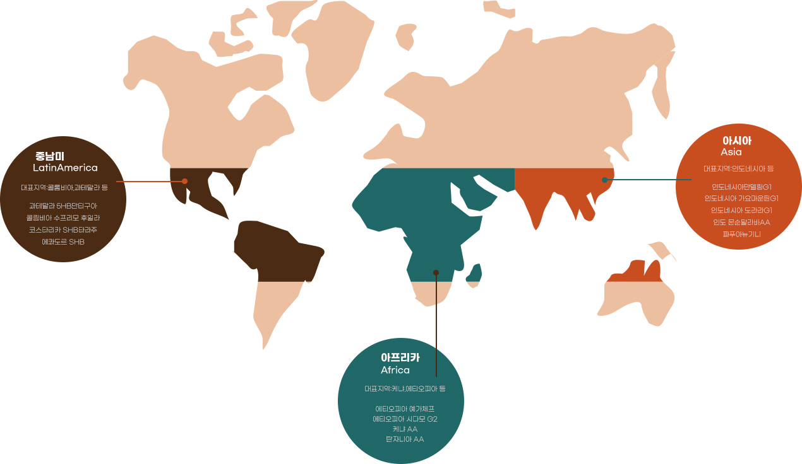

보헨루드윅 커피는 고품질의
원두만을 공급합니다.
원두가 가장 잘 자라는 기후와 비옥한 토양을 가진
커피벨트에서 생산된 고품질의 원두를 엄선하여
더욱 완벽한 맛과 풍미를 제공합니다.
커피 본연의 신선함을
제공합니다.
다년간 축적된 보헨루드윅만의 원두 관리
노하우를 바탕으로 원두가 가진
고유의 맛과 향을 그대로 유지하여
신선한 커피만을 제공합니다.
보헨루드윅 커피는 고품질의
원두만을 공급합니다.
원두가 가장 잘 자라는 기후와 비옥한 토양을 가진
커피벨트에서 생산된 고품질의 원두를 엄선하여
더욱 완벽한 맛과 풍미를 제공합니다.
보헨루드윅 원두의 특징
커피 본연의 풍부한 향을
첫 느낌으로,
고소한 단맛과 구수한 맛
깊고 중후한 긴 여운을
품고 있는
균형 잡힌 향미의 조화
커피 가루에 물을 부었을때
느껴지는 향 아로마
입안에 머금었을때 은은하게
퍼지는
커피 맛과 향
커피를 삼킨 후에도
지속되는 풍미
보헨루드윅 원두의 산지별 품종 소개
보헨루드윅 블렌딩
각 산지별 커피의 특성을
이해한 후 블랜디에 적합한
최고의 원두를 선별합니다.
1년 365일 언제나 최상의
품질의
커피를 만들기 위해
엄격한 품질을 관리합니다.
커피 본연의 맛과 향을
추출하기 위하여 전문적인
기술과 노하우로 로스팅합니다.
커피밸트에서 생산되는 스페셜티 급의 품질 좋은 생두를 엄선하여 까다로운 블랜딩 과정을
거쳐 보헨루드윅 스페셜티 원두로 다시 태어납니다.
보헨루드윅 로스팅
세계 커피 산지별 품질이 우수한 제품들을
선별하여 저온 보관을 합니다.
커피 본연의 맛과 향에 영향을 줄 수 있는
이물질은 제거를 하여 철저히 보관합니다.
국내 최고의 Q-grader(커피 감별사)와
커피 전문 Roaster(로스터)가
커피의 특성과 맛과 향을 파악하기 위해
전문적인 시스템을 이용하여 샘플 로스팅을 합니다.
고객에게 더 맛잇고 풍부한 향의
커피를 제공하기 위하여
여러번의 커핑 작업과 블랜딩을 통해
테스트를 진행하고 있습니다.

커피 본연의 맛과 향의 풍미를
입안 가득 머금을 수 있도록
전문적이고 체계적인 전용 로스팅
기기로 커피를 로스팅합니다.
최상의 맛과 향을 위하여 신속히 제품을
포장하고 커피가 가장 신선한 상태를
유지하여 맛과 향미가 가장 풍부한 기간에
각 매장에 제품을 공급합니다.
최고의 바리스타와 체계적이고
전문적인 시스템을 통하여
고객님께 감동과 만족을 선사하는 커피,
보헨루드윅입니다.